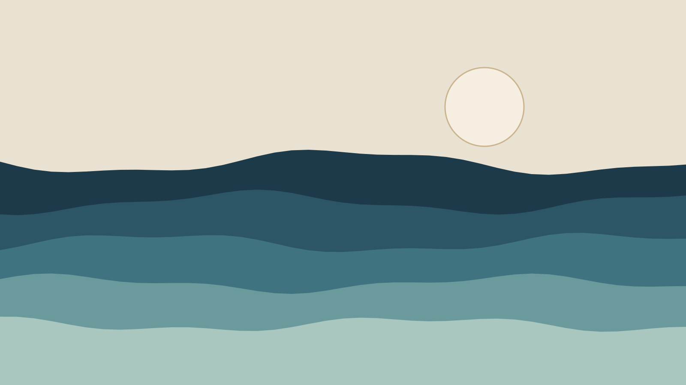

Essay
The Tide Keepers
On the last people who still read the tide by hand, and what the rest of us lost when we stopped looking out of the window.
Ivar Sandnes has kept the tide table for Kvalvik harbour for forty-one years, and he has never once used a computer to do it. Every morning at six he walks to the end of the stone pier with a brass rod marked in centimetres, reads the water against it, and writes the number in a ledger that his father started in 1951. The harbour authority has had an automatic gauge since 2004. Nobody has asked him to stop.
“The gauge is right,” he told me the first morning, when the light was still blue and the gulls were working the outflow. “It’s right to the millimetre. But it doesn’t notice anything.” What he meant, I came to understand over the following week, was that the number was never the point. The point was the walk.
On that walk he notices the colour of the water, which way the weed is lying, whether the eider have come in from the skerries, how the swell sounds against the breakwater. None of it goes in the ledger. All of it goes into the warnings he still gives, unofficially, to the boats.1

There are, by the count of a retired hydrographer in Bergen, eleven people left on this coast who keep a hand record. Most are over seventy. Two are the children of keepers who picked up the habit out of grief and found they couldn’t put it down.
“The gauge is right to the millimetre. But it doesn’t notice anything.”
It would be easy to make this a story about a dying craft, and it is partly that. But the more time I spent on the pier, the more it seemed to be a story about attention: about what happens to a place when nobody is paid, or obliged, or simply inclined to look at it at the same hour every day.2
What the ledger knows
The ledgers fill a shelf in Ivar’s kitchen. In the margins, in three different hands, are notes the numbers can’t hold: ice in the inner basin; herring close in, everyone out; storm surge, water to the second step of the chapel. Read in order they are a history of the harbour more honest than any official one, because nobody wrote them to be read.
When I asked whether anyone would take the ledger on after him, he looked out at the water for a long time. “Someone will,” he said finally. “Someone always notices that nobody’s noticing.”